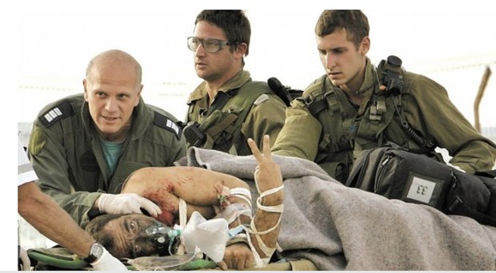
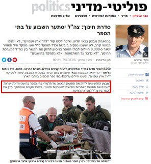

בשפת היום-יום, כשאנו אומרים "זה סתם מיתוס", אנו מתכוונים למשהו שקרי או אגדה. אולם בתקשורת ובחקר התרבות, למיתוס יש משמעות עמוקה יותר.
מיתוס הוא סיפור שהתרבות מספרת לעצמה על עצמה. הוא אינו בהכרח שקר, אלא דרך להסביר את המציאות, להצדיק נורמות חברתיות וללכד את החברה סביב ערכים משותפים.
החוקר הצרפתי רולאן בארת (Roland Barthes) בספרו "מיתולוגיות", טען שהמיתוסים המודרניים נמצאים בכל מקום: בפרסומות, בחדשות, בקולנוע ואפילו בהיאבקות.
לפי בארת, המיתוס הוא דיבור (Speech). הוא לוקח היסטוריה, תרבות ואידיאולוגיה והופך אותן ל"טבע". הוא גורם לנו להרגיש שהדברים הם "ככה זה בטבע", ולא תוצאה של החלטות אנושיות או היסטוריות.
בארת מסביר את המיתוס באמצעות המודל של דה-סוסיר (מסמן + מסומן = סימן), אך מוסיף לו קומה נוספת:
תהליך זה נקרא "התרוקנות". הסימן המקורי מאבד את ההקשר ההיסטורי והספציפי שלו, והופך לכלי קיבול לערכים אידיאולוגיים של המיתוס.
הדוגמה המפורסמת ביותר של בארת היא תמונה בשער המגזין "פריז מאץ'", המציגה חייל שחור מצדיע לדגל צרפת.
גם בחברה הישראלית קיימים מיתוסים רבים המעצבים את זהותנו: